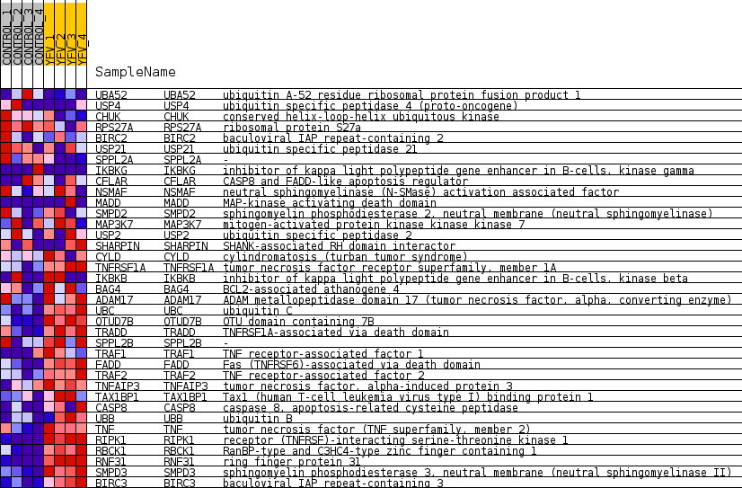
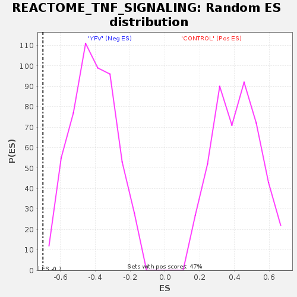

Profile of the Running ES Score & Positions of GeneSet Members on the Rank Ordered List
| Dataset | MATRIZ_GSE99081_collapsed_to_symbols.gsea_CLASE_99081.cls#CONTROL_versus_YFV |
| Phenotype | gsea_CLASE_99081.cls#CONTROL_versus_YFV |
| Upregulated in class | YFV |
| GeneSet | REACTOME_TNF_SIGNALING |
| Enrichment Score (ES) | -0.70174474 |
| Normalized Enrichment Score (NES) | -1.7154936 |
| Nominal p-value | 0.0 |
| FDR q-value | 0.03047314 |
| FWER p-Value | 0.416 |
| SYMBOL | TITLE | RANK IN GENE LIST | RANK METRIC SCORE | RUNNING ES | CORE ENRICHMENT | |
|---|---|---|---|---|---|---|
| 1 | UBA52 | ubiquitin A-52 residue ribosomal protein fusion product 1 | 1969 | 0.488 | -0.0971 | No |
| 2 | USP4 | ubiquitin specific peptidase 4 (proto-oncogene) | 2640 | 0.392 | -0.1189 | No |
| 3 | CHUK | conserved helix-loop-helix ubiquitous kinase | 2761 | 0.373 | -0.1077 | No |
| 4 | RPS27A | ribosomal protein S27a | 4134 | 0.232 | -0.1807 | No |
| 5 | BIRC2 | baculoviral IAP repeat-containing 2 | 4955 | 0.163 | -0.2232 | No |
| 6 | USP21 | ubiquitin specific peptidase 21 | 5314 | 0.129 | -0.2389 | No |
| 7 | SPPL2A | - | 5450 | 0.117 | -0.2413 | No |
| 8 | IKBKG | inhibitor of kappa light polypeptide gene enhancer in B-cells, kinase gamma | 5852 | 0.088 | -0.2617 | No |
| 9 | CFLAR | CASP8 and FADD-like apoptosis regulator | 6000 | 0.076 | -0.2670 | No |
| 10 | NSMAF | neutral sphingomyelinase (N-SMase) activation associated factor | 6585 | 0.033 | -0.3014 | No |
| 11 | MADD | MAP-kinase activating death domain | 9251 | -0.000 | -0.4658 | No |
| 12 | SMPD2 | sphingomyelin phosphodiesterase 2, neutral membrane (neutral sphingomyelinase) | 10606 | -0.068 | -0.5460 | No |
| 13 | MAP3K7 | mitogen-activated protein kinase kinase kinase 7 | 10616 | -0.068 | -0.5432 | No |
| 14 | USP2 | ubiquitin specific peptidase 2 | 10677 | -0.073 | -0.5432 | No |
| 15 | SHARPIN | SHANK-associated RH domain interactor | 11237 | -0.123 | -0.5716 | No |
| 16 | CYLD | cylindromatosis (turban tumor syndrome) | 12073 | -0.200 | -0.6131 | No |
| 17 | TNFRSF1A | tumor necrosis factor receptor superfamily, member 1A | 12354 | -0.229 | -0.6189 | No |
| 18 | IKBKB | inhibitor of kappa light polypeptide gene enhancer in B-cells, kinase beta | 12590 | -0.253 | -0.6208 | No |
| 19 | BAG4 | BCL2-associated athanogene 4 | 13903 | -0.425 | -0.6805 | Yes |
| 20 | ADAM17 | ADAM metallopeptidase domain 17 (tumor necrosis factor, alpha, converting enzyme) | 14055 | -0.452 | -0.6672 | Yes |
| 21 | UBC | ubiquitin C | 14182 | -0.479 | -0.6510 | Yes |
| 22 | OTUD7B | OTU domain containing 7B | 14191 | -0.481 | -0.6275 | Yes |
| 23 | TRADD | TNFRSF1A-associated via death domain | 14235 | -0.489 | -0.6057 | Yes |
| 24 | SPPL2B | - | 14686 | -0.537 | -0.6067 | Yes |
| 25 | TRAF1 | TNF receptor-associated factor 1 | 14728 | -0.549 | -0.5818 | Yes |
| 26 | FADD | Fas (TNFRSF6)-associated via death domain | 15085 | -0.649 | -0.5713 | Yes |
| 27 | TRAF2 | TNF receptor-associated factor 2 | 15093 | -0.651 | -0.5392 | Yes |
| 28 | TNFAIP3 | tumor necrosis factor, alpha-induced protein 3 | 15252 | -0.711 | -0.5134 | Yes |
| 29 | TAX1BP1 | Tax1 (human T-cell leukemia virus type I) binding protein 1 | 15338 | -0.759 | -0.4807 | Yes |
| 30 | CASP8 | caspase 8, apoptosis-related cysteine peptidase | 15454 | -0.808 | -0.4474 | Yes |
| 31 | UBB | ubiquitin B | 15642 | -0.918 | -0.4131 | Yes |
| 32 | TNF | tumor necrosis factor (TNF superfamily, member 2) | 15727 | -1.013 | -0.3677 | Yes |
| 33 | RIPK1 | receptor (TNFRSF)-interacting serine-threonine kinase 1 | 15848 | -1.206 | -0.3148 | Yes |
| 34 | RBCK1 | RanBP-type and C3HC4-type zinc finger containing 1 | 15872 | -1.241 | -0.2542 | Yes |
| 35 | RNF31 | ring finger protein 31 | 16006 | -1.617 | -0.1816 | Yes |
| 36 | SMPD3 | sphingomyelin phosphodiesterase 3, neutral membrane (neutral sphingomyelinase II) | 16066 | -1.944 | -0.0881 | Yes |
| 37 | BIRC3 | baculoviral IAP repeat-containing 3 | 16076 | -1.975 | 0.0101 | Yes |

